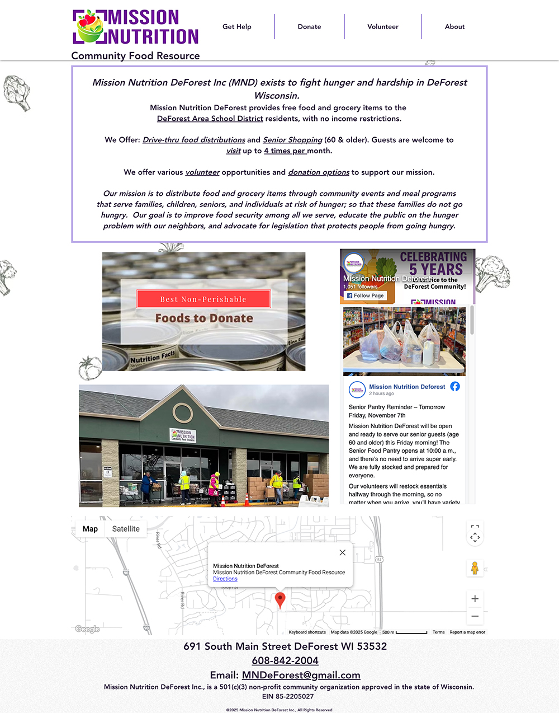
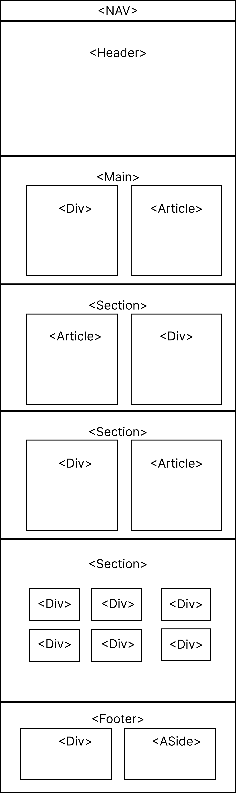
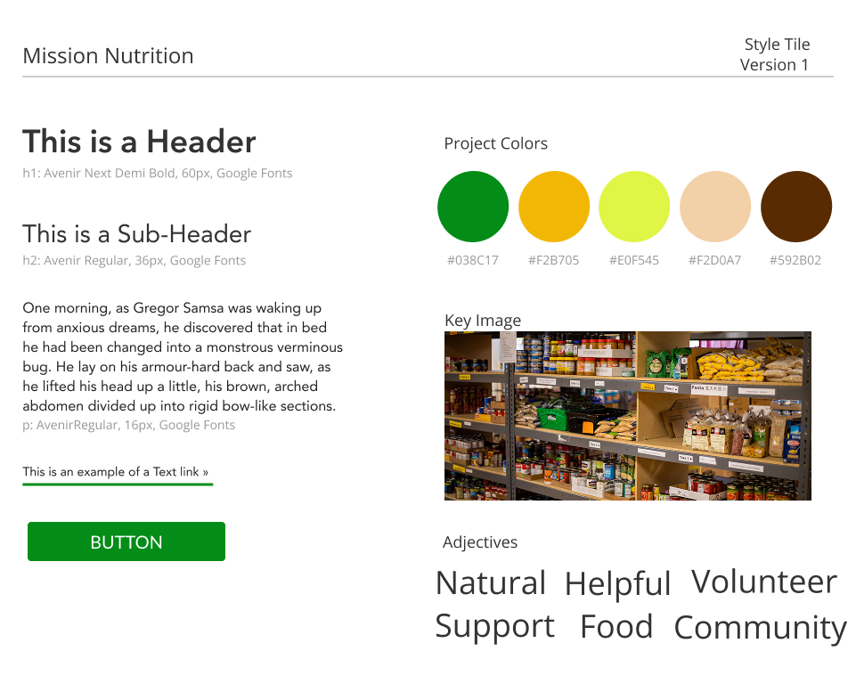
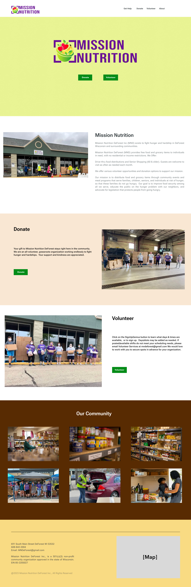
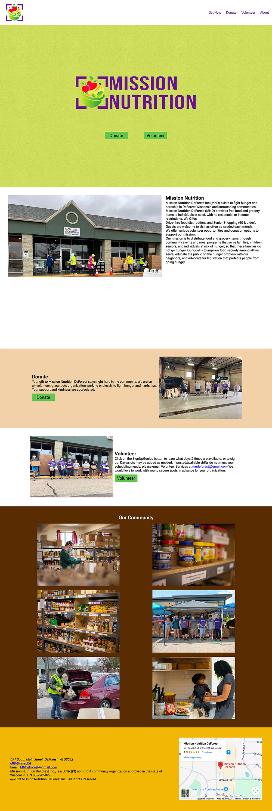
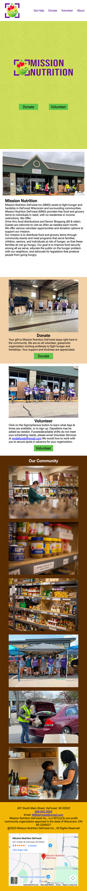

Web Designer
Mission Nutrition - Food Pantry
Client's Problem
I was given the client Mission Nutrution, a food pantry in DeForeset, WI to redesign their landing page for them.

I kept their logo, as it was pretty decent, and that was also outside of the scope of my work at the time. I would also keep their navigation as it worked decently for what I envisioned.
Two Projects
Initially I would just redesign a webpage for Mission Nutrition, but would come back to redesign their entire website.
Project 1 - Webpage Redesign
The Plan
I would create a semantic map of how I wanted to layout the new webpage, as seen below:

And after that, I would then create a style tile for how I wanted the webpage to look. I used Adobe Colors to extract a color scheme from the Key Image shown in the Style Tile below:

Prototyping
After the style tile was done, I would prototype the design in Figma, while also adding a few stock photos to keep the mood of Community, one of the descriptive adjectives used by the client.

Finalizing
After getting the go-ahead for my protytpe in Figma, I would recreate the prototype using HTML and CSS, using the Flex property and a few viewports for different sized screens, making it mobile friendly.


Link to Webpage Redesign
Mission Nutrition Webpage RedesignProject 2 - Web Flow Redesign
After my initial redesign for Mission Nutrition, I would go back and make a full website redesign, instead of a single webpage redesign. I worked this redesign in Web Flow -- a tool I would come to very much love using, as it allows me to use both a website builder and edit code directly.
This project was hard to show in-progress steps, so instead, I will just link directly to the completed version.